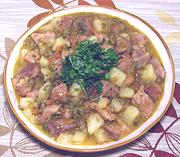

|
Pork & Green Chili StewUSA - New Mexico | ||||
| Serves: Effort: Sched: DoAhead: |
3 main *** 2-3/4 hrs Yes |
A standard every-day dish in New Mexico, this easy to make chili stew is just moderately hot. It can also made with more pork and no potatoes. This recipe can easily be doubled and reheats well. | |||
|
1 2 9 10 10 9 2 1-1/2 1/2 1/4 |
# cl oz oz oz oz T c t t |
Pork (1) Garlic Onion Potatoes (2) Green Chili (3) Tomatoes Oil Water Salt Pepper |
PREP - (35 min)
|